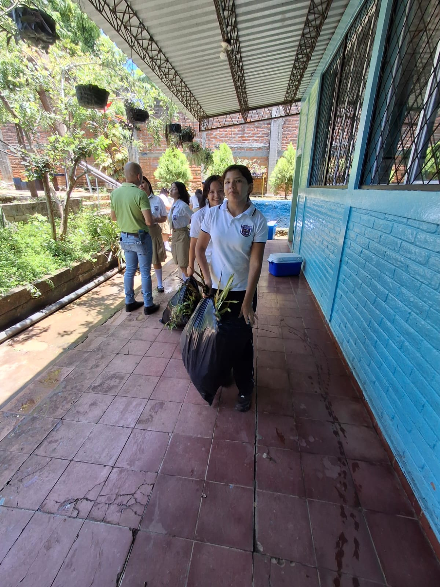

Enfoque Profesional
Prepárate para gestionar operaciones contables en empresas públicas y privadas con herramientas modernas y rigor profesional, dominando procesos financieros y contabilidad general.

Aquí te preparamos para entender cómo funcionan las finanzas, el manejo del dinero y el registro de operaciones en cualquier empresa o negocio. Aprenderás a llevar libros contables, usar hojas de cálculo con destreza, comprender las leyes tributarias y administrar de forma ordenada los recursos económicos. Es una carrera con muchísima aplicación práctica para el mundo laboral actual.
Prepárate para gestionar operaciones contables en empresas públicas y privadas con herramientas modernas y rigor profesional, dominando procesos financieros y contabilidad general.
